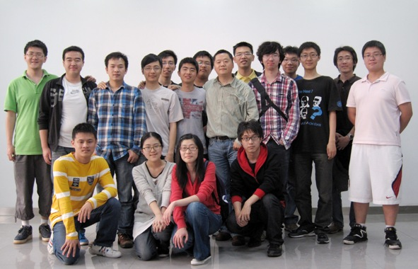

Home
Research
People
Publications
Teaching
Resources and links
Contact
Wiki
Links
Shanghai JiaoTong University
Computer Science Department
Publications of ADAPT

Database
Information Extraction and Knowledge Discovery
Data Privacy
Programming Languages
Concurrent Programming Language
Declarative Languages
Information Extraction and Knowledge Discovery
A system for Extracting Top-K Lists from the Web
KDD 12'
By
Zhixian Zhang
Automatic Extraction of Top-k Lists from the Web
ICDE 13'
By
Zhixian Zhang
Data Privacy
Set-valued data anonymization
---
By
Trajectory Inference Problem (TIP)
---
By
Concurrent Programming Language
A Runtime System for Generalized Committed Choice
APPLC 12'
By
Xiao Jia
Declarative Languages
A high-level hardware synthesis language
---
By